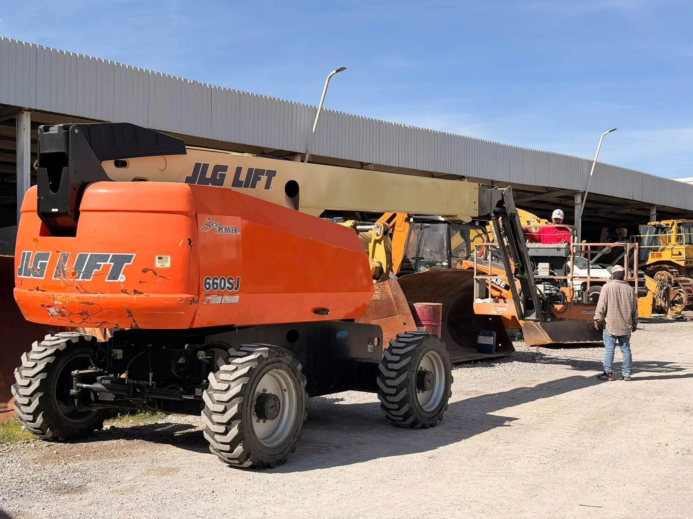

Alcance directo en alturaRenta de Plataformas Aéreas Telescópicas
Plataformas de brazo telescópico para trabajos que requieren gran alcance horizontal y altura de trabajo.
Opciones:JLG 660SJGenie S-125Genie / ManliftZoomlion telescópica